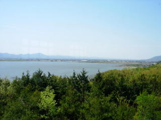

はるのミニサンレイクフェスティバル2010
2010/5/2
島根県立青年の家「サン・レイク」のイベントに行きました。
やってたことは、
○宍道湖クルージング（カッター船）と大型カヌー（サバニ）
大人気で順番待ちがとっても長そうでした。湖遊館横が会場です。
○ぐるぐるパンつくり
棒にパン生地を巻きつけて、炭火でパンを焼きます。
○ブーメランつくり
紙でブーメランをつくります。色を塗って、はさみで切って出来上がりです。
○プラ板づくり
紙に絵を書いて、トースターで焼いてキーホルダーをつくります。
○バルーンアート
ふうせんで動物や花を作ります。
あと食事は、カレー、ラーメン、うどん、親子丼が350円で食べれました。私はカレーを食べたんですが美味しかったです。

眺めのいい食堂でした。
アンケートを記入すると、連携施設の割引券がもらえました。残ったゴールデンウィークに、何か活用したいと思います。